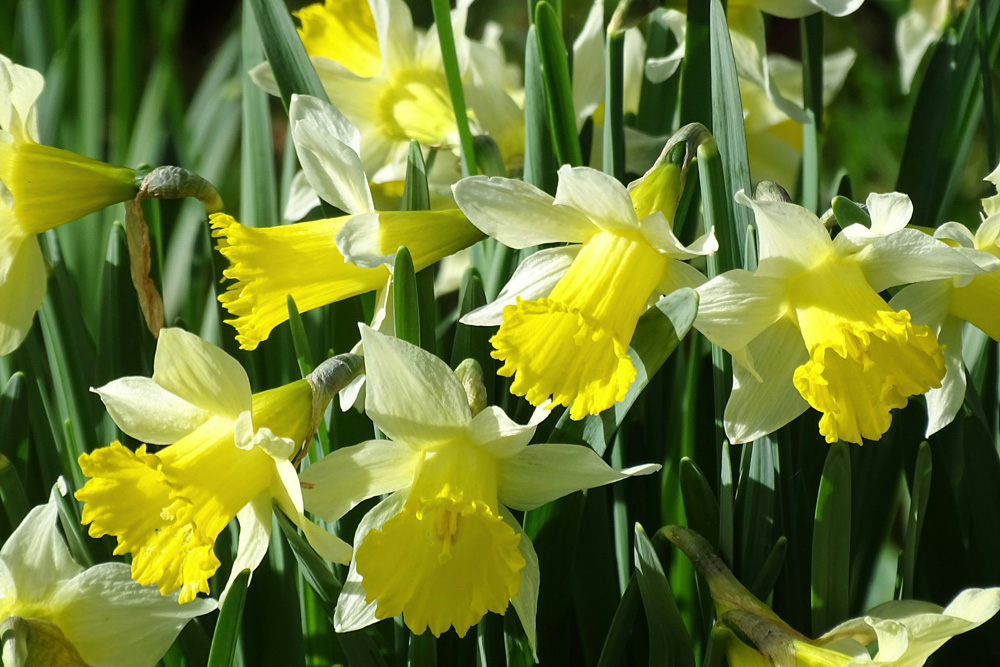

Unser Frühlingssortiment bringt Farbe in jeden Raum. Wir stellen die Auswahl jede Woche neu zusammen und achten auf frische Ware aus der Region. Besonders beliebt sind im Frühling Tulpen, Apfelbaumblüten und kleine Mischsträusse, die auch als Geschenk sehr gut passen.
Im Laden beraten wir dich persönlich zu Farben, Haltbarkeit und passender Vase. Wenn du möchtest, binden wir dir direkt vor Ort einen einfachen Strauss nach deinem Wunsch. So bekommst du eine individuelle Kombination, die zu deinem Anlass und Budget passt.

Zuständig für Frühlingsblumen
Ava betreut unser Frühlingssortiment und hilft dir bei der Auswahl.
Über Ava
Ava ist Gymnasiastin und bringt viel Begeisterung für Blumen und Farben in den Ladenalltag. Sie wohnt in Binningen und unterstützt unser Team besonders in der Frühlingssaison.
In ihrer Freizeit verbringt sie gerne Zeit mit Tieren. Ihre ruhige und freundliche Art hilft ihr dabei, Kundinnen und Kunden persönlich zu beraten und passende Blumen zu empfehlen.